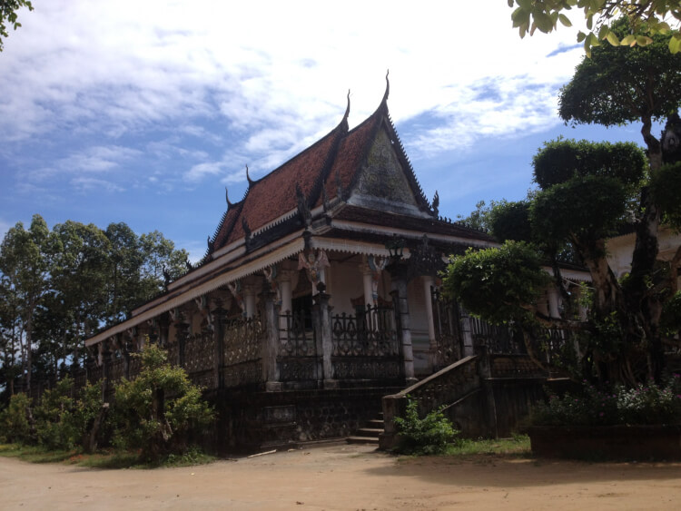
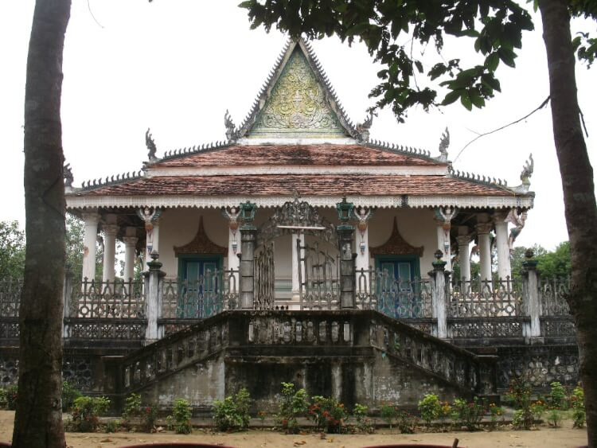

Di tích chùa Đom Bon Bak còn gọi là chùa Bào Môn tọa lạc cách thành phố Trà Vinh khoảng 40km về hướng nam, cách trung tâm huyện Duyên Hải khoảng 12km về hướng tây bắc thuộc ấp Bào Môn, xã Đôn Châu, huyện Duyên Hải, tỉnh Trà Vinh.
Chùa Bào Môn
Trong cuộc kháng chiến chống Pháp, ngay từ những ngày đầu Chi bộ xã Đôn Châu thành lập, Chi bộ nắm được ý đồ của địch là lợi dụng vấn đề dân tộc tôn giáo và dựa vào các chùa để chia rẻ đồng bào, chống phá cách mạng nên đã đến các chùa xây dựng cơ sở. Đối với chùa Đom Bon Bak, đồng chí Trần Văn Khôi - Bí thư Chi bộ bàn với sư cả Kim Nhiêu Kem chọn chùa làm cơ sở hoạt động hợp pháp, làm nơi nuôi chứa cán bộ đồng thời vận động các nhà sư lập ra Ban Tăng sự yêu nước tỉnh.
Từ năm 1946 - 1950, Ty Giáo dục đã đưa ông Tăng Khê, ông Ngà về chùa dạy học. Thông qua các lớp học, hai ông đã tuyên truyền đường lối chính sách của Đảng, giải thích âm mưu thâm độc của kẻ thù, giáo dục lòng yêu nước, tinh thần cách mạng cho thanh niên.
Năm 1943, nghi ngờ nhà chùa là cơ sở của cách mạng, địch tiến hành lục soát nhưng không phát hiện được gì, chúng tức giận cho đốt cháy ngôi chánh điện cùng tăng xá. Những năm sau Cách mạng Tháng 8/1945, nhà chùa đã nuôi chứa, bảo vệ các cán bộ bám trụ hoạt động như: Ông Maha Sơn Thông, Thạch Thiện Chí, Thạch Thanh, Thạch Sa Bút, Trần Lái, Hứa Minh Ngàn, Hứa Thành Công... Năm 1948, ngôi chùa một lần nữa bị địch đến lục soát và đốt ngôi chính điện.
Năm 1951, trong trận càn vào ấp Bào Môn và ấp Mồ Côi, địch bắn chết một số cán bộ như: Ông Dương Thành Biên, ông Tám Thân, Ông Thuối, ông Tệch, ông Quang... sư cả Kim Nhiêu Kem đã vận động phật tử đưa xác các cán bộ về chùa tổ chức mai táng. Sau đó trong một trận càn của lính Commendo thì nhà chùa đã đưa một số cán bộ vào các tháp và trần chính điện ẩn náu. Nhiều cán bộ cách mạng trong kháng chiến chống Pháp đã được nhà chùa nuôi chứa, đùm bọc, chở che như: ông Ma Ha Sơn Thông, Sơn Phước Rọth, Trân Lái, Thạch Ngọc Biên, Trần Văn Khôi, Chạr Khiêu, Trần Văn Tệch, Năm Chiêu, Mười Lành,...
Sang thời kỳ chống Mỹ, Ban Tăng sự yêu nước huyện Trà Cú cử thầy giáo Trầm Chại đến chùa mở lớp dạy học đồng thời triển khai các tài liệu của Đảng. Các vị sư chùa Ta Lôn bất chấp khó khăn, nguy hiểm tổ chức nuôi chứa cán bộ ngay tại phòng riêng của mình. Nhiều đồng chí như: Đỗ Công Lao, Thạch Phan Suônl, ông Phan Lê, Hứa Văn Sang, Ngô Thành Ngữ, Lâm Văn Các, Phạm Văn Ửng, Hồng Văn Sai, Huỳnh Văn Núi, Huỳnh Văn Phải…đã được nhà chùa nuôi chứa, bảo vệ an toàn.
Trong giai đoạn kháng chiến chống Mỹ, chùa tiếp tục là cơ sở của cách mạng. Nhiều hầm bí mật được làm trong khuôn viên và ngay cả dưới bệ thờ Phật, trên trần chính điện cũng như trong phòng của sư cả Kim Nhiêu Kem, sư Kim Tốc Chơn, sư Sơn Lương.
Năm 1960, dưới sự chỉ đạo của Tỉnh ủy, hàng ngàn người gồm sư sãi, đồng bào Kinh, Khmer tập trung tại chùa rồi kéo về Trà Vinh biểu tình đưa yêu sách đòi tên tỉnh trưởng thả Acha Phơ, Acha Luis Sa Rát, chống bắt bớ giam cầm, chống đàn áp sư sãi, đòi tự do đi lại học hành.
Sau cuộc biểu tình lực lượng đấu tranh tổ chức mít tinh mừng thắng lợi tại chùa. Địch phát hiện và đưa sư đoàn thủy quân lục chiến đến bao vây chùa, bắn chết ông Thạch Sa Rây và bắt giải về Trà Vinh 21 vị sư trong đó có sư cả Kim Nhiêu Kem. Sau đó đồng bào khiêng xác ông Thạch Sa Rây lên huyện, lên tỉnh đấu tranh. Riêng sư cả Kim Nhiêu Kem, sau nhiều lần mua chuộc, dụ dỗ không thành, chúng buộc phải thả sư cả.
Cuối năm 1968, địch nghi ngờ lực lượng du kích đóng trong chùa nên đưa quân đến bao vây. Trước tình thế đó, sư cả Kim Nhiêu Kem cho tiểu đội du kích xuống xi-tẹt nước trước chính điện, rồi bằng những lời lẽ khéo léo, kiên quyết, thuyết phục bọn địch để chúng rút đi.
Chùa Bào Môn
Tháng 9/1974, đồng chí Thạch Tua - Trưởng Ban Khmer vận tỉnh đã bàn với sư cả Kim Nhiêu Kem đưa một số cán bộ đặc công của tỉnh như Nguyễn Thành Công, Ba Trung,... giả dạng vào chùa tu, rồi sau đó sư cả dùng xe jeep của chùa đưa các cán bộ này đi nghiên cứu tình hình tề xã Đôn Châu, tề xã Long Sơn, tề xã Nhị Trường để sau đó tiến hành công kích tiêu diệt.
Trong chiến dịch Hồ Chí Minh giải phóng Trà Vinh, hòa thượng Kim Tốc Chơn - Trưởng Ban Sãi vận tỉnh đã phân công sư Lâm Rường Sơn cùng các vị sư Sơn Song, Thạch Sương, Sơn Sa Ra vào dinh tỉnh trưởng thuyết phục đầu hàng.
Có 25 vị sư và phật tử đã anh dũng hy sinh trong hai cuộc kháng chiến chống Pháp và Mỹ. Riêng sư cả Kim Nhiêu Kem được Nhà nước tặng thưởng Huân chương kháng chiến hạng nhì, Huy chương vì sự nghiệp phát triển dân tộc.
Ngày 10/6/2005, Ủy ban nhân dân tỉnh Trà Vinh ban hành Quyết định số 1022/QĐ-UBND xếp hạng chùa Đom Bon Bak là di tích cấp tỉnh thuộc loại hình di tích lịch sử.